I s m a i l
Biography
Selected Paintings
Sketches
Computer Graphics
Exhibitions
T a m a m
Biography
Selected Paintings
Sketches
Exhibitions
G u e s t b o o k
Guestbook
View all entries
C o n t a c t u s
Shammout
O t h e r
R e l a t e d
T o p i c s
Art in Palestine
What's new
| Ismail Shammout |
| s
e l e c t e d p a i n t i n g s |
Click on thumbnail to view larger image of painting..
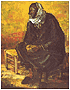 |
1960-1969 The
sixties and the following decades witnessed new
developments in the Palestinian issue yet the
impact and pains of the calamity persevered in
Ismail's works. |
||
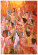 |
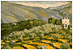 |
||
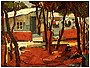 |
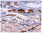 |
||
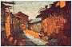 |
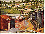 |
||
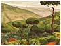 |
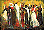 |
||
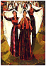 |
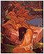 |
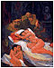 |
|
|